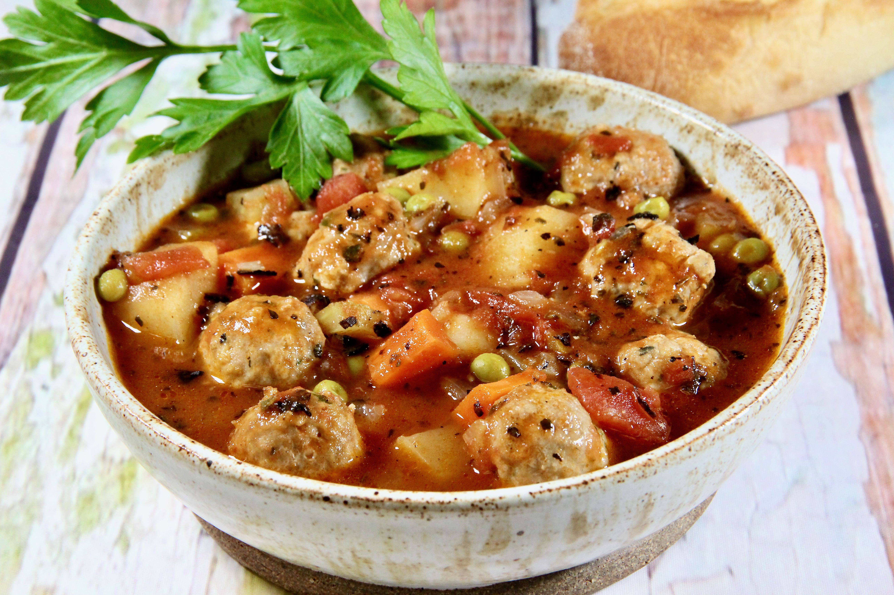

Turkey Meatball Stew

Description
A one-pot comfort food stew with a rich, savory broth. It's loaded with fresh veggies and tender turkey meatballs, all at just 357 calories per seving.
Ingredients
Turkey Meatballs
- 1 pound lean ground turkey
- 1 cup fresh bread crumbs
- 1 large egg, lightly beaten
- 2 tablespoons minced fresh parsley
- 1 teaspoon Worcestershire sauce
- 1 teaspoon garlic powder
- 1/2 teaspoon Italian seasoning
- 1/2 teaspoon onion powder
- 1 pinch salt and ground black pepper to taste
Stew
- 1/4 cup olive oil
- 1 medium onion, chopped
- 2 stalks celery, chopped
- 2 (14.5 ounce) cans fire-roasted diced tomatoes, undrained
- 3 cups low-sodium chicken broth
- 2 cups cubed peeled potatoes
- 1 cup peeled, chopped carrots
- 1 cup frozen peas
- 1 teaspoon dried basil
- 1/2 teaspoon crushed red pepper flakes (optional)
Directions
- Preheat the oven to 375 degrees F (190 degrees C). Line a rimmed baking sheet with foil. Coat a wire rack with nonstick cooking spray, set on prepared baking sheet, and set aside.
- Combine ground turkey, bread crumbs, egg, parsley, Worcestershire sauce, garlic powder, Italian seasoning, onion powder, salt, and pepper in a large bowl. Using a 2-teaspoon cookie scoop, shape the mixture into 1-inch balls and place on the baking rack.
- Bake in the preheated oven until no longer pink in the center, about 12 minutes.
- Meanwhile, heat olive oil in a Dutch oven over medium heat. Add onion and celery and cook until softened, about 5 minutes. Add tomatoes, chicken broth, potatoes, carrots, peas, basil, and red pepper flakes; stir until well combined. Bring to a boil, reduce heat to medium-low, and simmer, uncovered, until potatoes and carrots are cooked and the broth has somewhat reduced, 20 to 25 minutes.
- Stir in meatballs and simmer until heated through, 5 to 7 minutes. Season stew with salt and pepper./li>